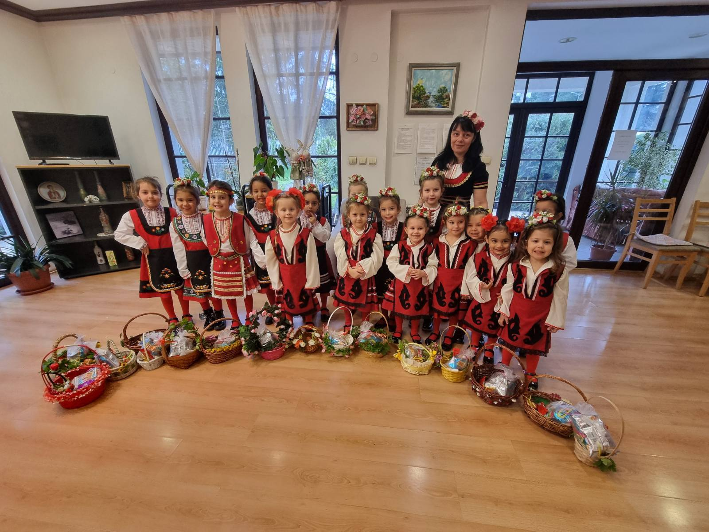
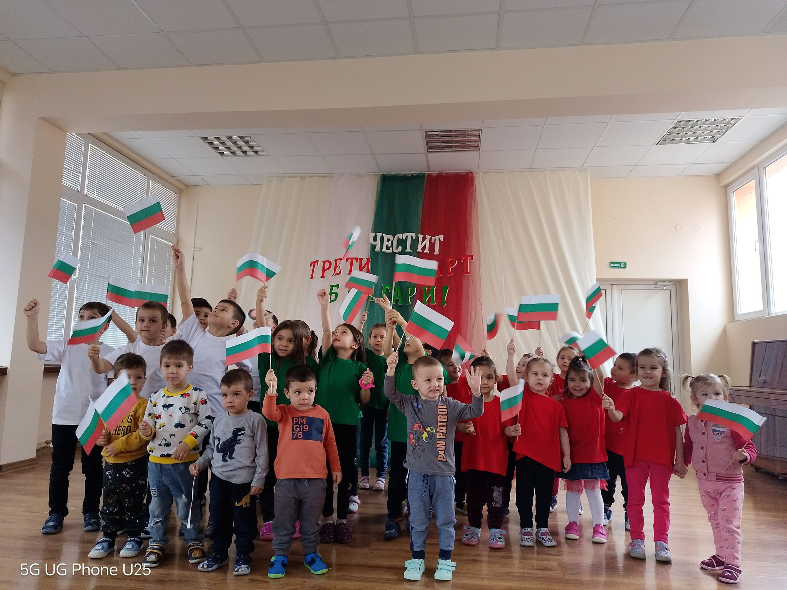
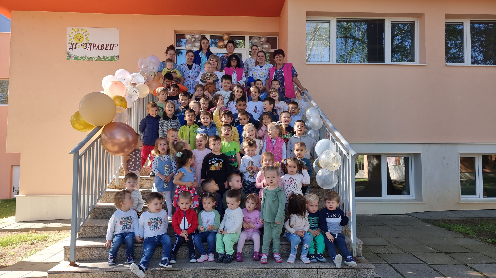

Добре дошли в детска градина "Здравец"
Детска градина "Здравец" се намира в град Правец и предлага уютна и стимулираща среда за развитие и обучение на деца от 3 до 7 години.
Нашата мисия е да създадем безопасна, грижовна и вдъхновяваща атмосфера, в която всяко дете може да развие своя потенциал чрез игри, образование и творчество.
В градината работи отдаден екип от учители и възпитатели, които ежедневно се стремят да развиват уменията, социалното поведение и любознателността на децата.


